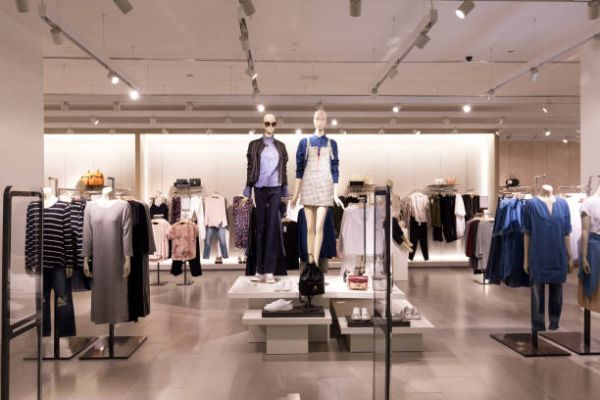
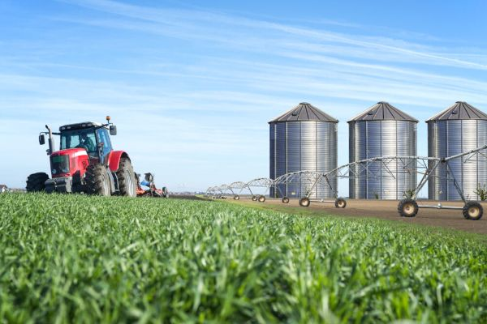
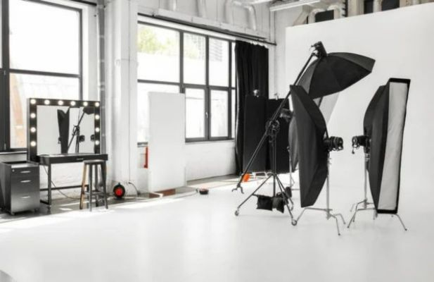
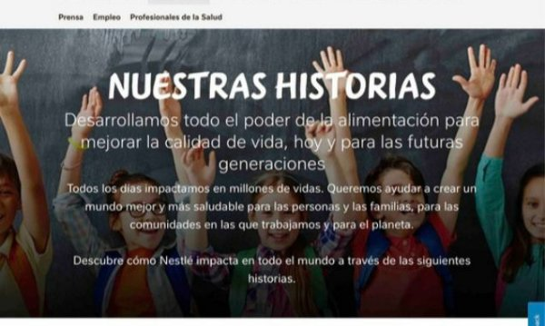

Sofia Moda
E-commerce simple para un comercio de barrio, con catálogo por categorías y checkout liviano.
proyectos
Cuatro proyectos recientes. Cuatro necesidades distintas.

E-commerce simple para un comercio de barrio, con catálogo por categorías y checkout liviano.

Sitio Web para cooperativas

Portfolio de una fotógrafa independiente, pensado para que la imagen sea siempre protagonista.

Blog de noticias del barrio